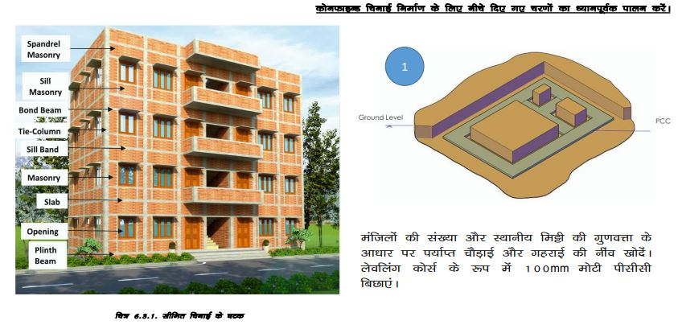
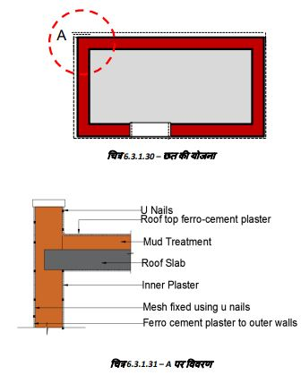

प्लिंथ स्तर से ऊपर की चिनाई
दीवारों की मोटाई डिजाइन पर निर्भर करती है। जहां ईंटें महंगी हैं लेकिन पत्थर उपलब्ध हैं, वहां तैयार किये हुए स्टोन कंक्रीट ब्लॉक, खोखले ब्लॉक, रफ कट पत्थर आदि का उपयोग चिनाई के रूप में किया जाता है। दीवारें इतनी मजबूत होनी चाहिए कि वे भार सहन कर सकें, नमी को रोक सकें और आग का प्रतिरोध कर सकें और अन्य प्राकृतिक गतिविधियों को सहन कर सकें। ईंटों/ब्लॉकों को सीमेंट और रेत का उपयोग करके जोड़ा जाना चाहिए। सभी दीवारों को भूकंप, चक्रवात, बाढ़ और आग आदि जैसे प्राकृतिक खतरों के कारण आने वाले अतिरिक्त भार को सहन करने के लिए डिजाइन किया जाना चाहिए।
1. चिनाई में ईंटों का उपयोग करने से एक दिन पहले, ईंटों को अच्छी तरह से भिगोने के लिए ढेर सारा
पानी छिड़कें।
2. चिनाई में उपयोग के लिए ईंटों को ढेर से बाहर निकालने से पहले फिर से पानी का छिड़काव करें।
सूखी ईंटें खराब गुणवत्ता और कम मजबूती वाली चिनाई देती हैं।
3. ईंटें आम तौर पर इंग्लिश बॉन्ड नामक पैटर्न में रखी जाती हैं। दीवार की मोटाई ईंट की एक लंबाई के
बराबर होती है जो इस्तेमाल की जा रही ईंट के प्रकार पर निर्भर करती है।


चरण 6: प्लिंथ बैंड के ऊपर चिनाई
एक बार जब हम प्लिंथ स्तर पर पहुंच गए और सभी दीवारों को एक साथ बांधने के लिए आरसीसी प्लिंथ बैंड डाला और सभी दरवाजे के फ्रेम को सही स्थान पर रख दिया, तो अब अधिरचना में चिनाई शुरू करने का समय है।
प्लिंथ स्तर के ऊपर, हम दीवारें बनाने के लिए क्षेत्र में स्थानीय रूप से उत्पादित मिट्टी के ब्लॉक (आकार: 300ग150ग150mm) का उपयोग करेंगे।
हम दीवारें इस तरह से बनाएंगे कि ये दीवारें काफी उच्च भूकंपीय ताकतों को झेल सकें और दिखने मे बेहतर और टिकाऊ हों।
हम 1:6 सीमेंट ़ रेत मोर्टार में 300mm मोटी दीवारें बनाने के लिए स्थानीय रूप से उपलब्ध धूप में सुखाए गए मिट्टी के ब्लॉक (300ग150ग150mm आकार) का उपयोग करेंगे।
भूकंप, हवा आदि से सुरक्षा के लिए हम सभी दीवारों को आरसीसी बैंड से एक साथ बांधेंगे और नींव, दीवारों और छत को हर कोने में खड़ी स्टील की छड़ों से बांधेंगे। यह लाहौल और स्पीति और किन्नौर जिलों के लिए बहुत महत्वपूर्ण है।
अब जब हमने सभी दीवारों पर बिना किसी रुकावट के आरसीसी प्लिंथ बैंड उपलब्ध करा दिया है, तो हम अधिसंरचना में चिनाई शुरू कर सकते हैं।
रेखाचित्रों को देखें और नीचे दिए गए निर्देशों का ध्यानपूर्वक पालन करें कि कोनों और दीवार जंक्शनों के माध्यम से स्टील बार को कैसे पार किया जाए।
सरिये के चारों ओर का गैप 1:1.5:3 सीमेंट कंक्रीट से भरा जाता है।
जैसा कि दिखाया गया है, हम दीवारों के कोने और टी जंक्शन बना सकते हैं जिससे स्टील की छड़ें बिना किसी ईंट को तोड़े गुजर सकें।
कोने के सुदृढ़ीकरण का विवरण
जैसा कि चित्र में दिखाया गया है, चिनाई इंग्लिश बॉन्ड में की गई है।
एक कोने से शुरू करें. सिमेंट व रेत के मिश्रण में एक ईंट रखें और ईंट की आधी चौड़ाई (यानी 3इंच) के बराबर जगह छोड़ दें। ।
सिमेंट व रेत के मिश्रण में अधिक ईंटें रखें। खड़ा सरिया 3इंच के खाली स्थान से होकर गुजरेगी।।
खाली स्थान को सीमेंट कंक्रीट (1:1.5:3) से भरें।।
अगले रद्दे में ईंटों की दिशा बदल जाएगी (चित्र देखें) लेकिन उसी पैटर्न का पालन करें।
चरण 10: मिट्टी की दीवारों/छत पर फेरो-सीमेंट प्लास्टर
फेरो-सीमेंट प्लास्टर उन सतहों पर लगाया जाता है, जिन पर सामान्य सीमेंट प्लास्टर चिपकता नहीं है या जहाँ प्लास्टर में सिकुड़न दरारें विकसित हो सकती हैं।
फेरो-सीमेंट प्लास्टर पानी के रिसाव के प्रति अधिक प्रतिरोधी है।
फेरो-सीमेंट सतह के साथ एक अच्छा बंधन विकसित करता है और क्षति के प्रति अधिक प्रतिरोधी है।
मिट्टी की दीवारों/छत पर फेरो-सीमेंट प्लास्टर का अनुप्रयोग:
सबसे पहले उस सतह पर किसी भी दरार आदि की मरम्मत करें जिस पर फेरो-सीमेंट प्लास्टर लगाया जाना है।
आपको छोटी-मोटी दरारों की मरम्मत करने की जरूरत नहीं है, इन्हें थ्ब् प्लास्टर से ढक दिया जाएगा।
सतह को किसी भी फंगस, ढीली गंदगी, चिपके हुए पोस्टर पेपर आदि से अच्छी तरह से साफ करें।
अब (22 या मोटा ळप् वायर) का 20ग20mm वर्गाकार जाल लें और कोने (।) से शुरू करते हुए सभी दीवारों पर लपेटें।
ळप् वायर न्.दंपसे (न्यूनतम 40mm लंबा) का उपयोग करके जाल/जाली को दीवारों पर ठीक करें।
मिट्टी की सतह पर लगभग 300 से 400mm (12 से 18 इंच) के अंतराल पर कीलें ठोंकें।
जाली के सभी जोड़ों (ऊर्ध्वाधर और क्षैतिज) को कम से कम 100mm पर ओवरलैप करें।
पूरी सतह पर 15mm मोटा सीमेंट सैंड प्लास्टर लगाएं और जाल और न्.दंपसे को ठीक से ढक दें। देखें कि कीलें/वायर मेश प्लास्टर से बाहर न निकल रही हों।
स्टील गिरमाला से सतह को चिकना करें।
सतह को कम से कम 20 दिनों तक पानी से तराई रखें।
मिट्टी की दीवारों व छत पर फेरो-सीमेंट प्लास्टर
दीवारों व छत की सतह को समतल और साफ करें।
पूरी सतह पर 20ग20mm तार की जाली फिट करें, 40 से 50mm लंबे यू आकार के तार की कीलों का उपयोग करें।
जाली को कोनों के चारों ओर लगभग 150mm तक जाने दें।
जोड़ों पर जाली कम से कम 100mm ओवरलैप होनी चाहिए।
जब जाली दीवारों पर अच्छी तरह से लग जाए, तो प्लास्टर के लिए 1 सीमेंट से 4 रेत, सीमेंट मिश्रण तैयार करें।
प्लास्टर की जाने वाली सतह को गीला करें।
दीवार व छत की सतह पर लगी जाली पर लगभग 15 से 20mm मोटा प्लास्टर लगाएं। चिकना करके खत्म करें।
कम से कम 20 दिनों तक पानी से तराई करे।
अब आप प्लास्टर की गई सतह को चूने के घोल या किसी अन्य उपयुक्त पेंट से पेंट कर सकते हैं।
कोने के सुदृढ़ीकरण का विवरण
कॉनफाइन्ड चिनाई एक निर्माण प्रणाली है जिसका उपयोग मजबूत ईंट या ब्लॉक की इमारतें बनाने के लिए किया जाता है जो भूकंप का प्रतिरोध कर सकती हैं। इसमें दीवारों को बांधने के लिए प्रबलित कंक्रीट टाई कॉलम और बॉन्ड बीम का उपयोग किया जाता है ताकि भूकंप के दौरान दीवारें, नींव और छत टूट न जाएँ, बिखर न जाएँ और गिर न जाएँ। यह एक सस्ता और बहुत प्रभावी तरीका है जिसका उपयोग उन जगहों पर किया जाता है जहाँ भूकंप आम हैं। 
मिट्टी की दीवारों/छत पर फेरो-सीमेंट प्लास्टर का प्रयोग
फेरो-सीमेंट प्लास्टर उन सतहों पर लगाया जाता है, जिन पर सामान्य सीमेंट प्लास्टर चिपकता नहीं है या जहाँ प्लास्टर में सिकुड़न दरारें विकसित हो सकती हैं।
इसलिए यह पानी के रिसाव के प्रति अधिक प्रतिरोधी है।
फेरो-सीमेंट सतह के साथ एक अच्छा बंधन विकसित करता है और प्रभावों के प्रति अधिक प्रतिरोधी होता है।
मिट्टी की दीवारों/छत पर फेरो-सीमेंट प्लास्टरग
सबसे पहले उस सतह पर किसी भी दरार आदि की मरम्मत करें जिस पर फेरो-सीमेंट प्लास्टर लगाया जाना है। आपको छोटी-मोटी खामियों की मरम्मत करने की जरूरत नहीं है, इन्हें एफसी प्लास्टर से ढक दिया जाएगा।.। सतह को किसी भी प्रकार के फफूंद, ढीली गंदगी, चिपके हुए पोस्टर पेपर आदि से अच्छी तरह साफ करें। अब 20ग20mm वर्गाकार जाल ( 22 या मोटा ळप् तार) लें।। एक कोने (।) से शुरू करते हुए सभी दीवारों के चारों ओर लपेटें।। जीआई वायर यू-नेल (न्यूनतम 40-50mm लंबे) का उपयोग करके दीवारों पर जाली को ठीक करें।। मिट्टी की सतह पर लगभग 300 से 400mm (12 से 18 इंच) के अंतराल पर कीलें ठीक करें। सभी वायर-मेस जोड़ों (लंबवत और क्षैतिज) को कम से कम 100mm ओवरलैप करें।। पूरी सतह पर 15mm मोटा सीमेंट सैंड प्लास्टर लगाएं, जिससे जाली और यू-नेल अच्छी तरह से ढक जाएं। देखें कि कीलें/वायर मेस प्लास्टर से बाहर न निकल रही हों। स्टील ट्रॉवेल से सतह को चिकना करें।
मिट्टी की दीवारों छत पर फेरो-सीमेंट प्लास्टर
दीवारों/छत की सतह को समतल और साफ करें।
पूरी सतह पर 20ग20mm की तार की जाली को 40 से 50mm लंबे यू आकार के तार की कीलों का उपयोग करके ठीक करें।
जाली को कोनों के चारों ओर लगभग 150mm तक जाने दें।
जोड़ों पर जाली कम से कम 100mm ओवरलैप होनी चाहिए।
जब जाली दीवारों पर अच्छी तरह से लग जाए, तो प्लास्टर के लिए 1 सीमेंट से 4ध्5 रेत, सीमेंट मोर्टार तैयार करें।
प्लास्टर की जाने वाली सतह को गीला करें।
दीवारों/छत की सतह पर लगी जाली पर लगभग 15 से 20mm मोटा प्लास्टर लगाएँ। चिकना करके खत्म करें।
कम से कम 20 दिनों तक पानी में रहने दें।
आप प्लास्टर की गई सतह को सूखने के बाद लाइम वाश या किसी अन्य उपयुक्त पेंट से पेंट कर सकते हैं।